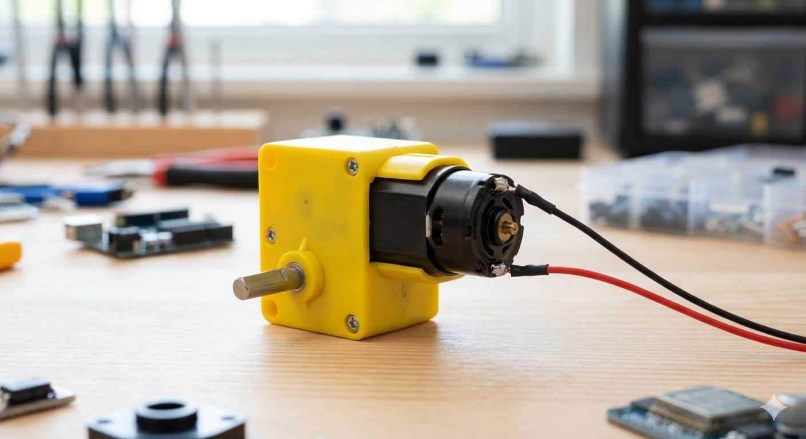
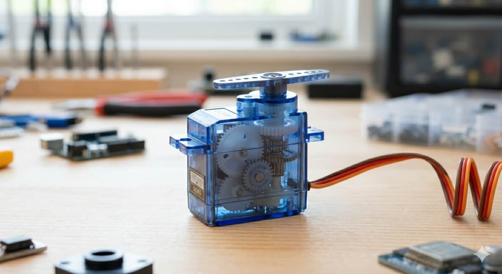
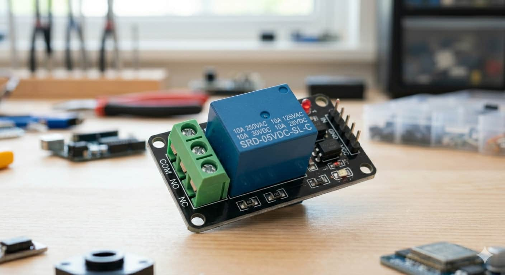
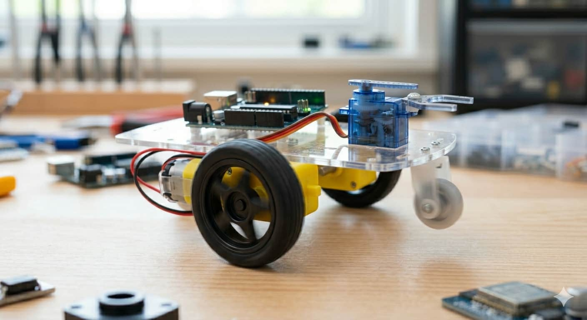
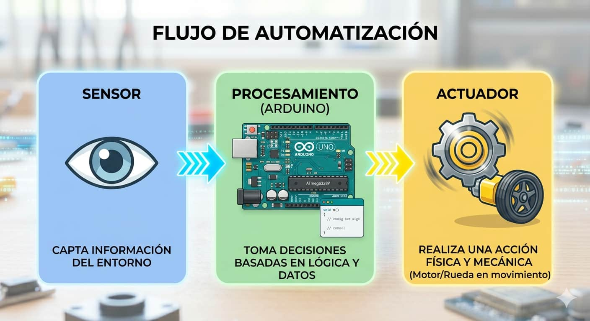

Motor DC

Proporciona rotación continua a alta velocidad, siendo la base fundamental para el desplazamiento de vehículos y ruedas en robots móviles.

Los actuadores son los componentes encargados de convertir la energía eléctrica y las decisiones lógicas en acciones físicas tangibles. Son la "musculatura" del sistema, transformando la información procesada en movimiento, sonido o control de potencia real.

Proporciona rotación continua a alta velocidad, siendo la base fundamental para el desplazamiento de vehículos y ruedas en robots móviles.

Permite un control preciso de la posición angular (entre 0° y 180°), ideal para mover articulaciones de brazos robóticos o timones de dirección.

Un interruptor electromagnético que permite a la placa Arduino controlar de forma segura dispositivos de alto voltaje, como lámparas o electrodomésticos.

Sin los actuadores, un robot tendría la capacidad de percibir su entorno y pensar una respuesta, pero carecería por completo de la facultad de interactuar o modificarlo. Gracias a ellos, cualquier estructura cobra vida y realiza un trabajo físico útil en el entorno real.
Todo sistema automatizado sigue un orden lógico constante de tres pasos para poder operar correctamente en tiempo real.

La relación lógica se ejecuta de manera cíclica y fluida dentro del microcontrolador:
Estas capacidades permiten expandir las posibilidades del microcontrolador hacia sistemas mecánicos complejos:
Para aprender sobre el conexionado, el uso de librerías específicas y códigos de ejemplo, visita la página de cada componente en el menú.